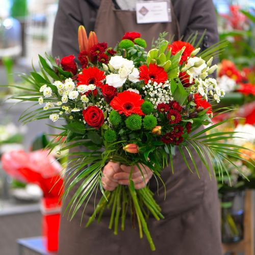

CélineFleurs, fleuriste depuis 20010
Situé à Castelnau Montratier Saint Alauzie 46063

Créée en 2010, par un Céline, cette enseigne a marqué une vraie révolution dans le monde de la fleur : Alors que les fleuristes traditionnels se partagent le marché, Le Jardin des Fleurs devient le premier réseau de Fleuristes en LIBRE-SERVICE.
Poussez la porte du jardin, et continuez votre balade à l'intérieur du magasin... Des bouquets ont fleuri sur la pelouse ! Dans un environnement naturel et bucolique, découvrez les délicieuses compositions.
L'amour du métier, de la fleur et de l'univers du jardin ont nourrit cette enseigne depuis sa création. l'ADN de la marque n'a cessé d'être renforcé.
Fraîcheur et générosité se retrouvent dans de jolis bouquets soigneusement préparés pour donner le sourire à tous ceux qui les recevront ! Un anniversaire, une fête, une naissance ? Laissez fleurir vos sentiments et faîtes livrer des bouquets de bonheur à vos proches.
UNE QUALITÉ IRRÉPROCHABLE...
Qu'il s'agisse de la fraîcheur de nos fleurs, de la confection de nos bouquets ou des soins apportés à son emballage ; nous sommes rigoureusement attentifs à la qualité de notre service. Plus que des garanties, il s'agit de véritables engagements dans notre activité.
Les contrôles de fraîcheur de nos fournisseurs sont permanents. Les bouquets sont réalisés par des fleuristes professionnels. Pas de machines, pas d'automatisation ! Chaque bouquet est tourné à la main, par un artisan fleuriste professionnel. L'emballage, sous forme de boite cadeau, est particulièrement robuste, et intègre une cale permettant de maintenir le bouquet dans un vase avec une réserve d'eau. Vos fleurs voyagent protégées, dans l'eau, et restent fraîches !